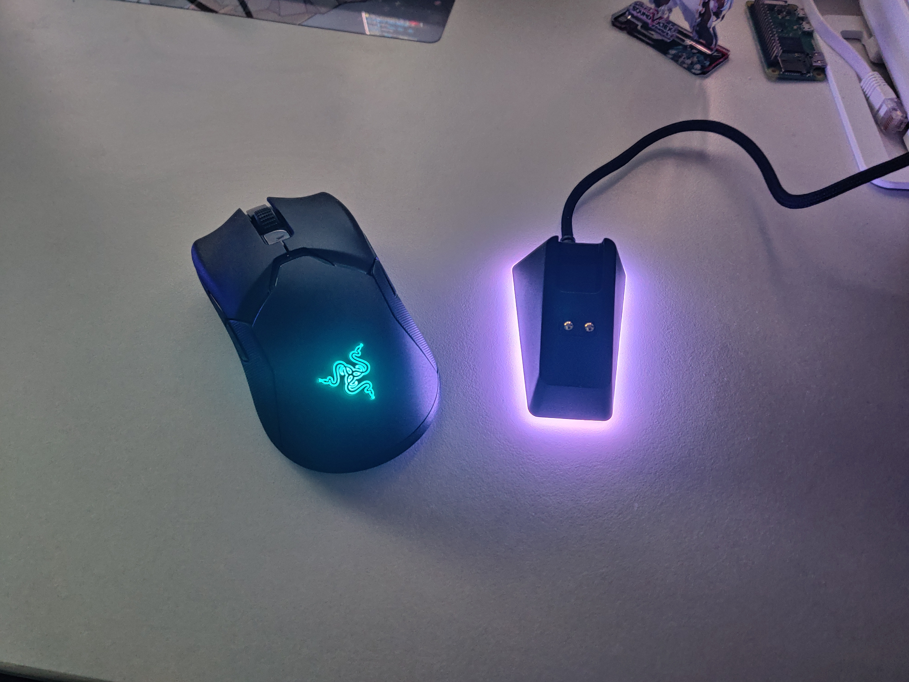

TR; DR: Razer Viper Ultimate is currently not configurable on Linux but can be used.
I bought Razer Viper Ultimate. It is the first time I bought an expensive mouse, but I really liked it!

First impressions
I Felt the body was light and a very fast connection for a wireless mouse.
And the feel of the click bottom and sensor is very good.
But I feel the mouse wheel is heavy.
I’ll leave Detailed review to others…
Use on GNU/Linux
-
Of course, wired and wireless connection works.
-
Currently, Viper Ultimate Can’t setting on Linux because it doesn’t support the openrazer. You should prepare Windows for settings. But a PR corresponding to the viper ultimate is open on the repository. So it will be supported by openrazer in the future.
-
Mouse and charging dock LED is doesn’t works. LED setting is not stored in the mouse. So it will do the rainbow sequence.
-
Key bindings and DPI set in Windows work on another operating system.
Conclusion
Razer Viper Ultimate is recommended if you can pay a lot of money for the mouse.
Can be used on operating system other than Windows. But can’t change settings.